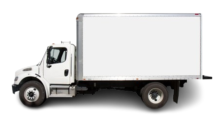
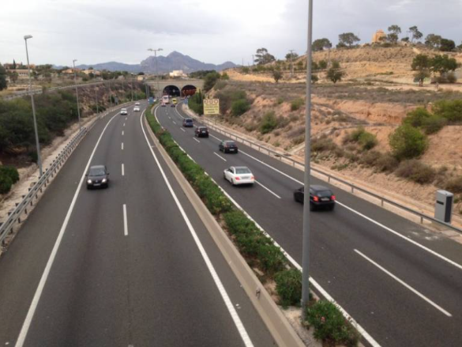
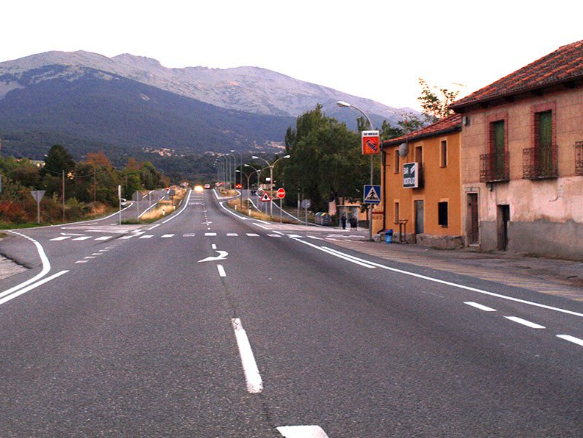
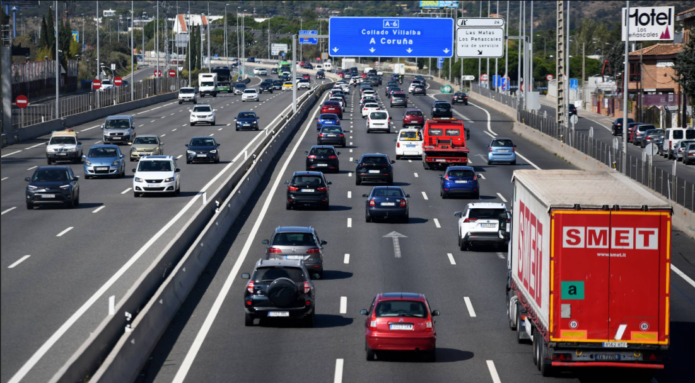
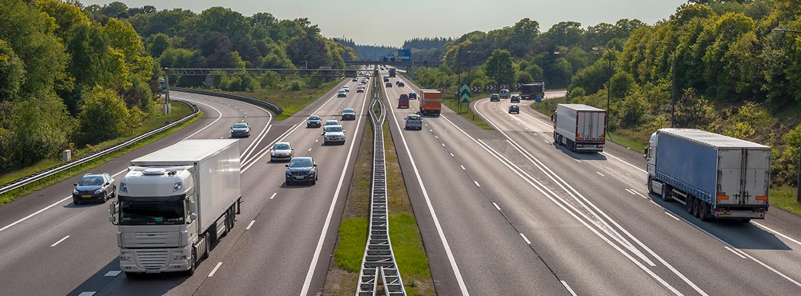

1. Mantener distancia de seguridad y atención a la carga.
2. Comprobar puntos muertos antes de maniobrar.
3. Circular atento a la vía y a los vehículos cercanos.
4. Señalizar siempre los cambios de carril y los giros con antelación.

1. Mantener distancia de seguridad y atención a la carga.
2. Comprobar puntos muertos antes de maniobrar.
3. Circular atento a la vía y a los vehículos cercanos.
4. Señalizar siempre los cambios de carril y los giros con antelación.

Máx. 80 km/h.
Reducir velocidad en curvas, cruces y zonas peligrosas.

Máx. 50 km/h.
Si transporta mercancías peligrosas, el límite baja a 40 km/h.

Máx. 90 km/h por seguridad.
Hay que circular por el carril adecuado y con maniobras suaves.

Máx. 90 km/h por seguridad.
Mirar retrovisores antes de cambiar de carril y respetar la distancia.

Reducir velocidad en zonas peligrosas y en maniobras.
Senyalitzar los giros con antelación y vigilar la carga.
Evitar aceleraciones bruscas y comprobar los puntos muertos.
Uso incorrecto de intermitentes: 200€.
Exceso de alcohol: hasta 6 puntos.
Drogas con accidente: 6 puntos y 1000€.